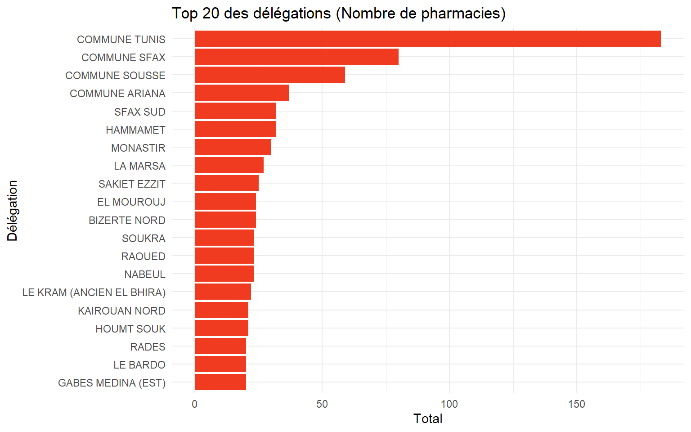
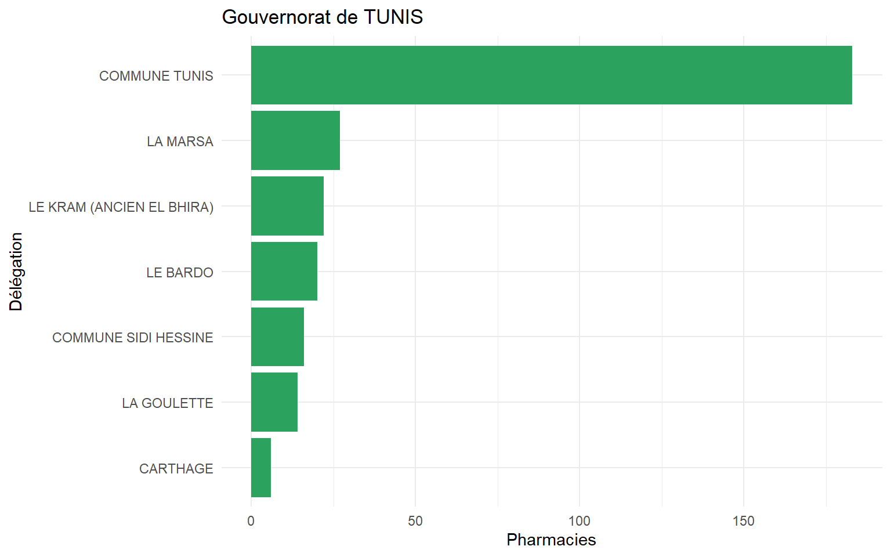
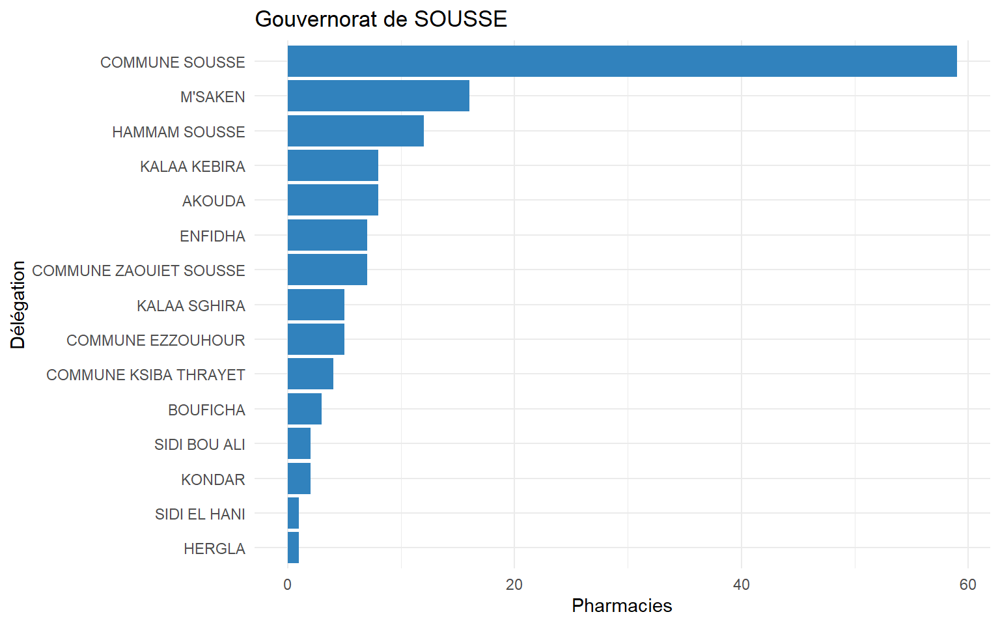
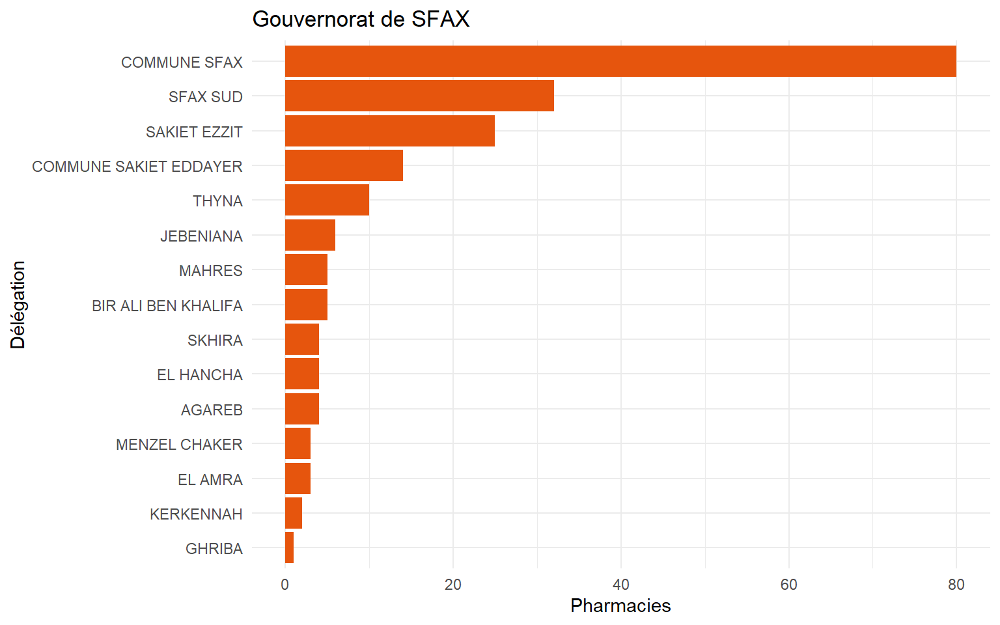

title: “Cartographie et Analyse des Pharmacies en Tunisie” subtitle: “Analyse des pharmacies par Délégation et Gouvernorat” author: “oumekelthoum Mohamed” date: “2026-01-01” format: html execute: echo: true —
1 1. Préparation et structuration des données 🔧
Cette étape vérifie que les données sont prêtes : import du CSV, typage de la variable Nombre de pharmacies, traitement des valeurs manquantes (remplacées par 0), puis agrégation par Délégation et Gouvernorat.
Show code
# Importationdata_path<-if(file.exists("data/pharmacies.csv")){file.path("data", "pharmacies.csv")}else{file.path("qmd", "data", "pharmacies.csv")}df<-read_csv(data_path, show_col_types =FALSE)# Vérification des variablesglimpse(df)
# Renommage et typagedf<-df%>%rename(nombre =`Nombre de pharmacies`)%>%mutate(nombre =as.numeric(nombre))# Gestion des valeurs manquantesna_count<-sum(is.na(df$nombre))if(na_count>0){cat("Attention :", na_count, "valeurs manquantes détectées. Elles seront remplacées par 0.\n")df<-df%>%mutate(nombre =replace_na(nombre, 0))}# Agrégation Initiale (Cruciale)# Calcul du total par Délégation et Gouvernoratagg_del<-df%>%group_by(Gouvernorat, Délégation)%>%summarise(total_pharmacies =sum(nombre, na.rm =TRUE), .groups ="drop")head(agg_del)
Nous analysons la distribution globale du nombre de pharmacies par délégation (moyenne, médiane, dispersion, quartiles).
Show code
# Calcul des mesures de tendance centrale, dispersion et positionstats_global<-agg_del%>%summarise( Moyenne =mean(total_pharmacies), Mediane =median(total_pharmacies), Ecart_Type =sd(total_pharmacies), Minimum =min(total_pharmacies), Maximum =max(total_pharmacies), Q1 =quantile(total_pharmacies, 0.25), Q3 =quantile(total_pharmacies, 0.75), Etendue =max(total_pharmacies)-min(total_pharmacies))knitr::kable(stats_global, caption ="Statistiques Descriptives Globales")
Statistiques Descriptives Globales
Moyenne
Mediane
Ecart_Type
Minimum
Maximum
Q1
Q3
Etendue
7.346008
4
13.84504
1
183
2
8
182
3 3. Analyses géographiques et de classement 🌍
3.1 A. Diagramme en Barres par Délégation (Top 20)
Show code
top20<-agg_del%>%arrange(desc(total_pharmacies))%>%slice_head(n =20)top20%>%mutate(Délégation =fct_reorder(Délégation, total_pharmacies))%>%ggplot(aes(x =Délégation, y =total_pharmacies))+geom_col(fill ="#f03b20")+coord_flip()+labs(title ="Top 20 des délégations (Nombre de pharmacies)", x ="Délégation", y ="Total")+theme_minimal()

3.2 B. Classement (Top 10 et Flop 10)
Show code
top10<-agg_del%>%arrange(desc(total_pharmacies))%>%slice_head(n =10)flop10<-agg_del%>%arrange(total_pharmacies)%>%slice_head(n =10)cat("--- TOP 10 Délégations ---\n")
--- TOP 10 Délégations ---
Show code
knitr::kable(top10, caption ="TOP 10 - Délégations les mieux dotées")
knitr::kable(flop10, caption ="FLOP 10 - Délégations les moins dotées")
FLOP 10 - Délégations les moins dotées
Gouvernorat
Délégation
total_pharmacies
BEJA
AMDOUN
1
BEJA
GOUBELLAT
1
BEJA
THIBAR
1
BIZERTE
UTIQUE
1
GABES
DKHILET TOUJANE
1
GABES
MATMATA
1
GABES
MATMATA JADIDA
1
GABES
MENZEL HABIB
1
GAFSA
BEL KHIR
1
GAFSA
EL GUETAR
1
3.3 C. Comparaison par Gouvernorat
Comparaison des délégations au sein de Tunis, Sousse et Sfax.
Show code
plot_gov<-function(data, gov_name, fill_color){data%>%filter(Gouvernorat==gov_name)%>%arrange(desc(total_pharmacies))%>%mutate(Délégation =fct_reorder(Délégation, total_pharmacies))%>%ggplot(aes(x =Délégation, y =total_pharmacies))+geom_col(fill =fill_color)+coord_flip()+labs(title =paste("Gouvernorat de", gov_name), x ="Délégation", y ="Pharmacies")+theme_minimal()}# Tunisplot_gov(agg_del, "TUNIS", "#2ca25f")

Show code
# Sousseplot_gov(agg_del, "SOUSSE", "#3182bd")

Show code
# Sfaxplot_gov(agg_del, "SFAX", "#e6550d")

4 4. Conclusion et interprétation 📝
4.1 Synthèse des Résultats
Moyenne vs Médiane : La moyenne (7.35) est nettement supérieure à la médiane (4). Cela indique une distribution asymétrique à droite (positive skewness). La majorité des délégations ont un nombre modeste de pharmacies, tandis que quelques “hubs” tirent la moyenne vers le haut.
Disparités : L’écart-type (13.85) et l’étendue (182) confirment de fortes disparités régionales.
4.2 Analyse de la Répartition
La répartition n’est pas homogène. On observe une forte concentration dans les chefs-lieux de gouvernorats et les zones côtières ou très urbanisées (Tunis, Sfax, Sousse).
4.3 Identification des Extrêmes
Les mieux pourvues : Sans surprise, les délégations comme COMMUNE TUNIS, COMMUNE SFAX, et COMMUNE SOUSSE dominent le classement.
Les moins pourvues : De nombreuses délégations rurales (souvent dans l’intérieur ou le sud, hors chefs-lieux) disposent de très peu de pharmacies (1 ou 2), ce qui peut poser des questions d’accessibilité aux soins.